6. 示例应用程序-03：rdvmedecins-pf-ejb
回顾为 Glassfish 服务器开发的示例应用程序的结构：
 |
除了Web层将使用JSF和Primefaces实现外，我们不会对该架构进行任何更改。
 |
6.1. NetBeans 项目
上图中的 [métier] 和 [DAO] 层来自示例 01（JSF / EJB / Glassfish）。我们将重复使用它们。
 |
- [mv-rdvmedecins-ejb-dao-jpa]：示例 01 中 [DAO] 和 [JPA] 层的项目 EJB，
- [mv-rdvmedecins-ejb-metier]：示例 01 中 [métier] 层的 EJB 项目，
- [mv-rdvmedecins-pf]：[web] 层的项目 / Primefaces – 新增，
- [mv-rdvmedecins-app-ear]：用于将应用程序部署到 Glassfish 服务器的企业项目 – 新增。
6.2. 企业项目
企业项目仅用于将三个模块 [mv-rdvmedecins-ejb-dao-jpa]、[mv-rdvmedecins-ejb-metier]、[mv-rdvmedecins-pf] 部署到 Glassfish 服务器上。NetBeans 项目如下：
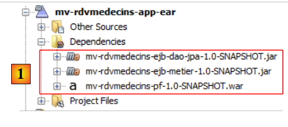 |
该项目仅用于处理这三个依赖项 [1]，这些依赖项在文件 [pom.xml] 中定义如下：
<?xml version="1.0" encoding="UTF-8"?>
<project xmlns="http://maven.apache.org/POM/4.0.0" xmlns:xsi="http://www.w3.org/2001/XMLSchema-instance" xsi:schemaLocation="http://maven.apache.org/POM/4.0.0 http://maven.apache.org/xsd/maven-4.0.0.xsd">
<modelVersion>4.0.0</modelVersion>
<parent>
<artifactId>mv-rdvmedecins-app</artifactId>
<groupId>istia.st</groupId>
<version>1.0-SNAPSHOT</version>
</parent>
<groupId>istia.st</groupId>
<artifactId>mv-rdvmedecins-app-ear</artifactId>
<version>1.0-SNAPSHOT</version>
<packaging>ear</packaging>
<name>mv-rdvmedecins-app-ear</name>
...
<dependencies>
<dependency>
<groupId>${project.groupId}</groupId>
<artifactId>mv-rdvmedecins-ejb-dao-jpa</artifactId>
<version>${project.version}</version>
<type>ejb</type>
</dependency>
<dependency>
<groupId>${project.groupId}</groupId>
<artifactId>mv-rdvmedecins-ejb-metier</artifactId>
<version>${project.version}</version>
<type>ejb</type>
</dependency>
<dependency>
<groupId>${project.groupId}</groupId>
<artifactId>mv-rdvmedecins-pf</artifactId>
<version>${project.version}</version>
<type>war</type>
</dependency>
</dependencies>
</project>
- 第 10-13 行：企业项目的 Maven 构建产物，
- 第 18-37 行：项目的三个依赖项。请特别注意这些依赖项的类型（第 23、29、35 行）。
要运行 Web 应用程序，需运行此企业项目。
6.3. Primefaces Web 项目
Primefaces Web 项目如下：
 |
- 在 [1] 中，包含该项目的页面。 页面 [index.xhtml] 是该项目中的唯一页面。它包含三个片段：[form1.xhtml]、[form2.xhtml] 和 [erreur.xhtml]。其余页面仅用于布局。
- 在 [2] 中，是 Java Bean。作用域为 application 的 Bean [Application]，作用域为 session 的 Bean [Form]。 [Erreur] 类封装了一个错误。[MyDataModel] 类作为 Primefaces 中 <dataTable> 标签的模板，
- [3] 用于国际化消息文件，
- [4] 包含依赖项。该 Web 项目依赖于 [DAO] 层中的 EJB 项目， [métier] 层中的 EJB 项目，以及 [web] 层中的 Primefaces。
6.4. 项目配置
该项目的配置与我们之前研究过的 Primefaces 或 JSF 项目相同。我们列出配置文件，不再赘述。
 |  |
[web.xml]：配置 Web 应用程序。
<?xml version="1.0" encoding="UTF-8"?>
<web-app version="3.0" xmlns="http://java.sun.com/xml/ns/javaee" xmlns:xsi="http://www.w3.org/2001/XMLSchema-instance" xsi:schemaLocation="http://java.sun.com/xml/ns/javaee http://java.sun.com/xml/ns/javaee/web-app_3_0.xsd">
<context-param>
<param-name>javax.faces.STATE_SAVING_METHOD</param-name>
<param-value>client</param-value>
</context-param>
<context-param>
<param-name>javax.faces.PROJECT_STAGE</param-name>
<param-value>Production</param-value>
</context-param>
<context-param>
<param-name>javax.faces.FACELETS_SKIP_COMMENTS</param-name>
<param-value>true</param-value>
</context-param>
<servlet>
<servlet-name>Faces Servlet</servlet-name>
<servlet-class>javax.faces.webapp.FacesServlet</servlet-class>
<load-on-startup>1</load-on-startup>
</servlet>
<servlet-mapping>
<servlet-name>Faces Servlet</servlet-name>
<url-pattern>/faces/*</url-pattern>
</servlet-mapping>
<session-config>
<session-timeout>
30
</session-timeout>
</session-config>
<welcome-file-list>
<welcome-file>faces/index.xhtml</welcome-file>
</welcome-file-list>
<error-page>
<error-code>500</error-code>
<location>/faces/exception.xhtml</location>
</error-page>
<error-page>
<exception-type>Exception</exception-type>
<location>/faces/exception.xhtml</location>
</error-page>
</web-app>
请注意，第30行中，页面[index.xhtml]是该应用程序的首页。
[faces-config.xml]：配置应用程序 JSF
<?xml version='1.0' encoding='UTF-8'?>
<!-- =========== FULL CONFIGURATION FILE ================================== -->
<faces-config version="2.0"
xmlns="http://java.sun.com/xml/ns/javaee"
xmlns:xsi="http://www.w3.org/2001/XMLSchema-instance"
xsi:schemaLocation="http://java.sun.com/xml/ns/javaee http://java.sun.com/xml/ns/javaee/web-facesconfig_2_0.xsd">
<application>
<resource-bundle>
<base-name>
messages
</base-name>
<var>msg</var>
</resource-bundle>
<message-bundle>messages</message-bundle>
</application>
</faces-config>
[beans.xml]：内容为空，但对于注释 @Named 而言必不可少
<?xml version="1.0" encoding="UTF-8"?>
<beans xmlns="http://java.sun.com/xml/ns/javaee"
xmlns:xsi="http://www.w3.org/2001/XMLSchema-instance"
xsi:schemaLocation="http://java.sun.com/xml/ns/javaee http://java.sun.com/xml/ns/javaee/beans_1_0.xsd">
</beans>
[styles.css]：应用程序的样式表
.col1{
background-color: #ccccff
}
.col2{
background-color: #ffcccc
}
Primefaces 库自带其专属样式表。上述样式表仅用于显示异常情况下的页面，该页面不受应用程序管理。此时将显示页面 [exception.xhtml]。
[messages_fr.properties]：法语消息文件
# 布局
layout.entete=Les M\u00e9decins Associ\u00e9s
layout.basdepage=ISTIA, universit\u00e9 d'Angers - application propuls\u00e9e par PrimeFaces et JQuery
# 例外
exception.header=L'exception suivante s'est produite
exception.httpCode=Code HTTP de l'erreur
exception.message=Message de l'exception
exception.requestUri=Url demand\u00e9e lors de l'erreur
exception.servletName=Nom de la servlet demand\u00e9e lorsque l'erreur s'est produite
# 表格 1
form1.titre=R\u00e9servations
form1.medecin=M\u00e9decin
form1.jour=Jour
form1.options=Options
form1.francais=Fran\u00e7ais
form1.anglais=Anglais
form1.rafraichir=Rafra\u00eechir
form1.precedent=Jour pr\u00e9c\u00e9dent
form1.suivant=Jour suivant
form1.agenda=Affiche l'agenda du m\u00e9decin choisi pour le jour choisi
form1.today=Aujourd'hui
# 表单 2
form2.titre=Agenda de {0} {1} {2} le {3}
form2.titre_detail=Agenda de {0} {1} {2} le {3}
form2.creneauHoraire=Cr\u00e9neau horaire
form2.client=Client
form2.accueil=Accueil
form2.supprimer=Supprimer
form2.reserver=R\u00e9server
form2.valider=Valider
form2.annuler=Annuler
form2.erreur=Erreur
form2.emtyMessage=Pas de cr\u00e9neaux entr\u00e9s dans la base
form2.suppression.confirmation=Etes-vous s\u00fbr(e) ?
form2.suppression.message=Suppression d'un rendez-vous
form2.supprimer.oui=Oui
form2.supprimer.non=Non
form2.erreurClient=Client [{0}] inconnu
form2.erreurClient_detail=Client {0} inconnu
form2.erreurAction=Action non autoris\u00e9e
form2.erreurAction_detail=Action non autoris\u00e9e
# 错误
erreur.titre=Une erreur s'est produite.
erreur.exceptions=Cha\u00eene des exceptions
erreur.type=Type de l'exception
erreur.message=Message associ\u00e9
erreur.accueil=Accueil
[messages_en.properties]：英语消息文件
# 布局
layout.entete=Associated Doctors
layout.basdepage=ISTIA, Angers university - Application powered by PrimeFaces and JQuery
# 异常
exception.header=The following exceptions occurred
exception.httpCode=Error HTTP code
exception.message=Exception message
exception.requestUri=Url targeted when error occurred
exception.servletName=Servlet targeted's name when error occurred
# 表单 1
form1.titre=Reservations
form1.medecin=Doctor
form1.jour=Date
form1.options=Options
form1.francais=French
form1.anglais=English
form1.rafraichir=Refresh
form1.precedent=Previous Day
form1.suivant=Next day
form1.agenda=Show the doctor's diary for the chosen doctor and the chosen day
form1.today=Today
# 表单 2
form2.titre={0} {1} {2}'' diary on {3}
form2.titre_detail={0} {1} {2}'' diary on {3}
form2.creneauHoraire=Time Period
form2.client=Client
form2.accueil=Welcome Page
form2.supprimer=Delete
form2.reserver=Reserve
form2.valider=Submit
form2.annuler=Cancel
form2.erreur=Error
form2.emtyMessage=No Time periods in the database
form2.suppression.confirmation=Are-you sure ?
form2.suppression.message=Booking deletion
form2.supprimer.oui=Yes
form2.supprimer.non=No
form2.erreurClient=Unknown Client {0}
form2.erreurClient_detail=Unknown Client [{0}]
form2.erreurAction=Unauthorized action
form2.erreurAction_detail=Action non autoris\u00e9e
# 错误
erreur.titre=The following exceptions occurred
erreur.exceptions=Exceptions' chain
erreur.type=Exception type
erreur.message=Associated Message
erreur.accueil=Welcome
6.5. 页面模板 [layout.xhtml]
 |
[layout.xhtml]模板如下：
<?xml version='1.0' encoding='UTF-8' ?>
<!DOCTYPE html PUBLIC "-//W3C//DTD XHTML 1.0 Transitional//EN" "http://www.w3.org/TR/xhtml1/DTD/xhtml1-transitional.dtd">
<html xmlns="http://www.w3.org/1999/xhtml"
xmlns:h="http://java.sun.com/jsf/html"
xmlns:p="http://primefaces.org/ui"
xmlns:f="http://java.sun.com/jsf/core"
xmlns:ui="http://java.sun.com/jsf/facelets">
<f:view locale="#{form.locale}">
<h:head>
<title>JSF</title>
<h:outputStylesheet library="css" name="styles.css"/>
</h:head>
<h:body style="background-image: url('#{request.contextPath}/resources/images/standard.jpg');">
<h:form id="formulaire">
<table style="width: 1200px">
<tr>
<td colspan="2" bgcolor="#ccccff">
<ui:include src="entete.xhtml"/>
</td>
</tr>
<tr>
<td style="width: 10px;" bgcolor="#ffcccc">
<ui:include src="menu.xhtml"/>
</td>
<td>
<p:outputPanel id="contenu">
<ui:insert name="contenu">
<h2>Contenu</h2>
</ui:insert>
</p:outputPanel>
</td>
</tr>
<tr bgcolor="#ffcc66">
<td colspan="2">
<ui:include src="basdepage.xhtml"/>
</td>
</tr>
</table>
</h:form>
</h:body>
</f:view>
</html>
该模板中唯一可变的部分是第28至30行的区域。该区域位于id:form:content（第27行）中。请记住这一点。用于更新该区域的AJAX调用将具有update=":form:content"属性。 此外，表单从第15行开始。因此，插入在第28-30行的片段将插入到该表单中。
该模板生成的外观如下：
 |
页面的动态部分将插入到上文框选的区域中。
6.6. 页面 [index.xhtml]
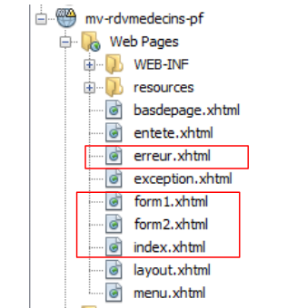 |
该项目始终显示同一页面，即以下页面 [index.xhtml]：
<?xml version='1.0' encoding='UTF-8' ?>
<!DOCTYPE html PUBLIC "-//W3C//DTD XHTML 1.0 Transitional//EN" "http://www.w3.org/TR/xhtml1/DTD/xhtml1-transitional.dtd">
<html xmlns="http://www.w3.org/1999/xhtml"
xmlns:h="http://java.sun.com/jsf/html"
xmlns:p="http://primefaces.org/ui"
xmlns:f="http://java.sun.com/jsf/core"
xmlns:ui="http://java.sun.com/jsf/facelets">
<ui:composition template="layout.xhtml">
<ui:define name="contenu">
<ui:fragment rendered="#{form.form1Rendered}">
<ui:include src="form1.xhtml"/>
</ui:fragment>
<ui:fragment rendered="#{form.form2Rendered}">
<ui:include src="form2.xhtml"/>
</ui:fragment>
<ui:fragment rendered="#{form.erreurRendered}">
<ui:include src="erreur.xhtml"/>
</ui:fragment>
</ui:define>
</ui:composition>
</html>
- 第 8-9 行：该片段 XHTML 将插入到模板 [layout.xhtml] 的动态区域中，
- 该页面包含三个子片段：
- [form1.xhtml]，第10-12行；
- [form2.xhtml]，第13-15行；
- [erreur.xhtml]，第16-18行。
这些片段在 [index.xhtml] 中的显示由与该页面关联的 [Form.java] 模板中的布尔值控制。因此，通过调整这些布尔值，生成的页面效果会有所不同。
片段 [form1.xhtml] 的渲染效果如下：
片段 [form2.xhtml] 的渲染效果如下：
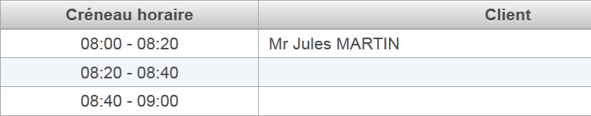 |
片段 [erreur.xhtml] 的渲染结果如下：
 |
6.7. 项目的 Bean
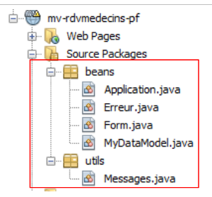 |
[utils] 包中的类已介绍过：[Messages] 类是用于简化应用程序消息国际化的类。该类已在第 2.8.5.7 节中进行过探讨。
6.7.1. Application Bean
Bean [Application.java] 是一个作用域为 application 的 Bean。需要指出的是，此类 Bean 用于存储只读数据，并供应用程序的所有用户使用。该 Bean 如下所示：
package beans;
import javax.ejb.EJB;
import javax.enterprise.context.ApplicationScoped;
import javax.inject.Named;
import rdvmedecins.metier.service.IMetierLocal;
@Named(value = "application")
@ApplicationScoped
public class Application {
// 业务层
@EJB
private IMetierLocal metier;
public Application() {
}
// 获取器
public IMetierLocal getMetier() {
return metier;
}
}
- 第 8 行：将 Bean 命名为 application，
- 第 9 行：其作用域为应用程序，
- 第 13-14 行：应用服务器上的 EJB 容器将向其注入 [métier] 层的本地接口引用。回顾一下应用程序的架构：
 |
应用程序 JSF、EJB 和 [Metier] 将在同一个 JVM（Java 虚拟机）中运行。 因此，[JSF] 层将使用 EJB 的本地接口。仅此而已。 [Application] Bean 本身不包含其他内容。若要访问 [métier] 层，其他 Bean 将通过该 Bean 进行调用。
6.7.2. [Erreur] Bean
[Erreur] 类定义如下：
- package beans;
public class Erreur {
public Erreur() {
}
// 字段
private String classe;
private String message;
// 构造函数
public Erreur(String classe, String message){
this.setClasse(classe);
this.message=message;
}
// 获取器和设置器
...
}
- 第 9 行：如果抛出了异常，则为异常类的名称；
- 第 10 行：错误消息。
6.7.3. Bean [Form]
其代码如下：
package beans;
import java.io.IOException;
...
@Named(value = "form")
@SessionScoped
public class Form implements Serializable {
public Form() {
}
// 应用程序 Bean
@Inject
private Application application;
// 会话缓存
private List<Medecin> medecins;
private List<Client> clients;
private Map<Long, Medecin> hMedecins = new HashMap<Long, Medecin>();
private Map<Long, Client> hClients = new HashMap<Long, Client>();
private Map<String, Client> hIdentitesClients = new HashMap<String, Client>();
// 模型
private Long idMedecin;
private Date jour = new Date();
private Boolean form1Rendered = true;
private Boolean form2Rendered = false;
private Boolean erreurRendered = false;
private String form2Titre;
private AgendaMedecinJour agendaMedecinJour;
private Long idCreneauChoisi;
private Medecin medecin;
private Long idClient;
private CreneauMedecinJour creneauChoisi;
private List<Erreur> erreurs;
private Boolean erreur = false;
private String identiteClient;
private String action;
private String msgErreurClient;
private Boolean erreurClient;
private String msgErreurAction;
private Boolean erreurAction;
private String locale = "fr";
@PostConstruct
private void init() {
// 将医生和客户缓存起来
try {
medecins = application.getMetier().getAllMedecins();
clients = application.getMetier().getAllClients();
} catch (Throwable th) {
// 记录错误
prepareVueErreur(th);
return;
}
// 字典
for (Medecin m : medecins) {
hMedecins.put(m.getId(), m);
}
for (Client c : clients) {
hClients.put(c.getId(), c);
hIdentitesClients.put(identite(c), c);
}
}
...
// 视图显示
private void setForms(Boolean form1Rendered, Boolean form2Rendered, Boolean erreurRendered) {
this.form1Rendered = form1Rendered;
this.form2Rendered = form2Rendered;
this.erreurRendered = erreurRendered;
}
// 准备工作vueErreur
private void prepareVueErreur(Throwable th) {
// 创建错误列表
erreurs = new ArrayList<Erreur>();
erreurs.add(new Erreur(th.getClass().getName(), th.getMessage()));
while (th.getCause() != null) {
th = th.getCause();
erreurs.add(new Erreur(th.getClass().getName(), th.getMessage()));
}
// 显示错误视图
setForms(true, false, true);
}
// 获取器和设置器
...
}
- 第6-8行：类[Form]是一个名为form且作用域为session的Bean。需注意，此时该类必须可序列化，
- 第14-15行：form Bean持有对application Bean的引用。该引用将由应用程序运行的Servlet容器注入（存在@Inject注解）。
- 第17-44行：页面模板[form1.xhtml, form2.xhtml, erreur.xhtml]。这些页面的显示由第27-29行的布尔值控制。需要注意的是，默认情况下渲染的是页面[form1.xhtml]（第27行），
- 第46-47行：类实例化后立即执行init方法（存在@PostConstruct注解），
- 第 50-51 行：向 [métier] 层请求医生和客户的列表，
- 第59-65行：若一切顺利，将构建医生和客户的字典。它们按编号进行索引。随后，将显示页面[form1.xhtml]（第27行），
- 第54行：若发生错误，则构建页面[erreur.xhtml]的模板。该模板即第36行中的错误列表，
- 第78-88行：方法[prepareVueErreur]构建待显示的错误列表。 随后，页面 [index.xhtml] 显示片段 [form1.xhtml] 和 [erreur.xhtml]（第 87 行）。
页面 [erreur.xhtml] 如下所示：
<?xml version='1.0' encoding='UTF-8' ?>
<!DOCTYPE html PUBLIC "-//W3C//DTD XHTML 1.0 Transitional//EN" "http://www.w3.org/TR/xhtml1/DTD/xhtml1-transitional.dtd">
<html xmlns="http://www.w3.org/1999/xhtml"
xmlns:h="http://java.sun.com/jsf/html"
xmlns:p="http://primefaces.org/ui"
xmlns:f="http://java.sun.com/jsf/core"
xmlns:ui="http://java.sun.com/jsf/facelets">
<body>
<p:panel header="#{msg['erreur.titre']}" closable="true" >
<hr/>
<p:dataTable value="#{form.erreurs}" var="erreur">
<f:facet name="header">
<h:outputText value="#{msg['erreur.exceptions']}"/>
</f:facet>
<p:column>
<f:facet name="header">
<h:outputText value="#{msg['erreur.type']}"/>
</f:facet>
<h:outputText value="#{erreur.classe}"/>
</p:column>
<p:column>
<f:facet name="header">
<h:outputText value="#{msg['erreur.message']}"/>
</f:facet>
<h:outputText value="#{erreur.message}"/>
</p:column>
</p:dataTable>
</p:panel>
</body>
</html>
它使用 <p:dataTable> 标签（第 12-28 行）来显示错误列表。这将生成类似于以下内容的错误页面：
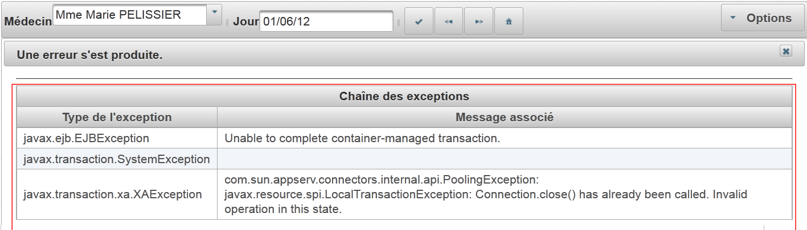 |
接下来我们将定义应用程序的生命周期各个阶段。针对用户的每项操作，我们将研究相关的视图和事件处理程序。
6.8. 显示首页
如果一切正常，首先显示的页面是 [form1.xhtml]。这将显示以下视图：
 |
页面 [form1.xhtml] 如下所示：
<?xml version='1.0' encoding='UTF-8' ?>
<!DOCTYPE html PUBLIC "-//W3C//DTD XHTML 1.0 Transitional//EN" "http://www.w3.org/TR/xhtml1/DTD/xhtml1-transitional.dtd">
<html xmlns="http://www.w3.org/1999/xhtml"
xmlns:h="http://java.sun.com/jsf/html"
xmlns:p="http://primefaces.org/ui"
xmlns:f="http://java.sun.com/jsf/core"
xmlns:ui="http://java.sun.com/jsf/facelets">
<p:toolbar>
<p:toolbarGroup align="left">
...
</p:toolbarGroup>
<p:toolbarGroup align="right">
...
</p:toolbarGroup>
</p:toolbar>
</html>
截图中框选的工具栏是 Primefaces 组件 Toolbar。该组件在第 8-14 行中定义。它包含两组组件，每组均由 <toolbarGroup> 标签定义，分别位于第 9-11 行和第 12-14 行。 其中一组位于工具栏左侧（第9行），另一组位于右侧（第12行）。
让我们来看看左侧组中的某些组件：
<p:toolbar>
<p:toolbarGroup align="left">
<h:outputText value="#{msg['form1.medecin']}"/>
<p:selectOneMenu value="#{form.idMedecin}" effect="fade">
<f:selectItems value="#{form.medecins}" var="medecin" itemLabel="#{medecin.titre} #{medecin.prenom} #{medecin.nom}" itemValue="#{medecin.id}"/>
<p:ajax update=":formulaire:contenu" listener="#{form.hideAgenda}" />
</p:selectOneMenu>
<p:separator/>
<h:outputText value="#{msg['form1.jour']}"/>
<p:calendar id="calendrier" value="#{form.jour}" readOnlyInputText="true">
<p:ajax event="dateSelect" listener="#{form.hideAgenda}" update=":formulaire:contenu"/>
</p:calendar>
<p:separator/>
<p:commandButton id="resa-agenda" icon="ui-icon-check" actionListener="#{form.getAgenda}" update=":formulaire:contenu"/>
<p:tooltip for="resa-agenda" value="#{msg['form1.agenda']}"/>
...
</p:toolbarGroup>
...
- 第4-7行：医生下拉列表，其中添加了一个效果（effect="fade"），
- 第6行：一个行为AJAX。当下拉列表发生变化时，将执行方法[Form].hideAgenda (listener="#{form.hideAgenda}") 将被执行，动态区域 :form:content (update=":formulaire:contenu") 将被更新，
- 第 8 行：在工具栏中添加分隔符，
- 第 10-12 行：日期输入区域。此处使用 Primefaces 日历。该输入区域为只读（readOnlyInputText="true"），
- 第11行：一个行为AJAX。当日期发生变化时，将执行方法[Form].hideAgenda，并更新动态区域：form:content，
- 第14行：一个按钮。 点击该按钮将调用 AJAX 方法，调用 [Form].getAgenda() 方法，此时模板将被修改，并使用服务器的响应来更新动态区域 :form:content，
- 第15行：<tooltip>标签用于为组件关联一个帮助气泡。该组件的ID由tooltip的for属性指定。此处（for="resa-agenda"）指代第14行的按钮：
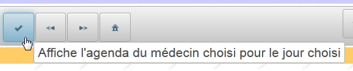 |  |
本页面由以下模板提供支持：
@Named(value = "form")
@SessionScoped
public class Form implements Serializable {
public Form() {
}
// 会话缓存
private List<Medecin> medecins;
private List<Client> clients;
// 模型
private Long idMedecin;
private Date jour = new Date();
// 医生列表
public List<Medecin> getMedecins() {
return medecins;
}
// 客户列表
public List<Client> getClients() {
return clients;
}
// 日程表
public void getAgenda() {
...
}
- 第 12 行的字段负责读取和写入页面第 4 行列表中的值。 页面初次加载时，它会将下拉列表中的选定值固定下来。在初次加载时，idMedecin 等于 null，因此将选定第一位医生，
- 第16-18行的方法生成医生下拉列表的选项（页面第5行）。每个生成的选项将以（itemLabel）作为标签，显示医生的头衔、姓氏和名字，并以（itemValue）作为值，即医生的ID，
- 第13行的字段通过读写方式为页面第10行的输入字段提供数据。因此，初始显示时，显示的是当天日期，
- 第26-28行：方法getAgenda负责处理页面第14行中按钮[Agenda]的点击事件。它与JSF版本中的实现几乎完全相同：
// 应用程序 Bean
@Inject
private Application application;
// 会话缓存
private List<Medecin> medecins;
private Map<Long, Medecin> hMedecins = new HashMap<Long, Medecin>();
// 模板
private Long idMedecin;
private Date jour = new Date();
private Boolean form1Rendered = true;
private Boolean form2Rendered = false;
private Boolean erreurRendered = false;
private AgendaMedecinJour agendaMedecinJour;
private Long idCreneauChoisi;
private CreneauMedecinJour creneauChoisi;
private List<Erreur> erreurs;
private Boolean erreur = false;
public void getAgenda() {
try {
// 获取医生
medecin = hMedecins.get(idMedecin);
// 医生某一天的日程表
agendaMedecinJour = application.getMetier().getAgendaMedecinJour(medecin, jour);
// 显示表单 2
setForms(true, true, false);
} catch (Throwable th) {
// 错误视图
prepareVueErreur(th);
}
// 目前未选择任何时段
creneauChoisi = null;
}
我们不再对该代码进行说明。相关说明已另行发布。
6.9. 显示医生的日程表
6.9.1. 日程表概览
这是以下用例：
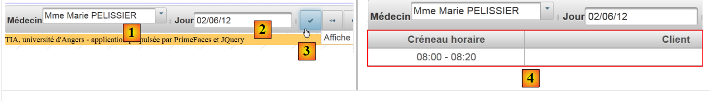 |
- 在 [1] 中，选择一位医生 [1] 和一天 [2]，然后请求 [3] 获取该医生所选日期的日程表，
- 在 [4] 中，该日程表会显示在工具栏下方。
该页面的代码如下：
<?xml version='1.0' encoding='UTF-8' ?>
<!DOCTYPE html PUBLIC "-//W3C//DTD XHTML 1.0 Transitional//EN" "http://www.w3.org/TR/xhtml1/DTD/xhtml1-transitional.dtd">
<html xmlns="http://www.w3.org/1999/xhtml"
xmlns:h="http://java.sun.com/jsf/html"
xmlns:p="http://primefaces.org/ui"
xmlns:f="http://java.sun.com/jsf/core"
xmlns:ui="http://java.sun.com/jsf/facelets"
xmlns:c="http://java.sun.com/jsp/jstl/core">
<body>
<!-- 上下文菜单 -->
<p:contextMenu for="agenda">
...
</p:contextMenu>
<!-- 日程表 -->
<p:dataTable id="agenda" value="#{form.myDataModel}" var="creneauMedecinJour" style="width: 800px"
selectionMode="single" selection="#{form.creneauChoisi}" emptyMessage="#{msg['form2.emtyMessage']}">
<!-- 时间表列 -->
<p:column style="width: 100px">
...
</p:column>
<!-- 客户列 -->
<p:column style="width: 300px">
...
</p:column>
</p:dataTable>
<!-- 删除确认RV -->
<p:confirmDialog id="confirmDialog" message="#{msg['form2.suppression.confirmation']}"
header="#{msg['form2.suppression.message']}" severity="alert" widgetVar="confirmation">
...
</p:confirmDialog>
<!-- 错误信息 -->
<p:dialog header="#{msg['form2.erreur']}" widgetVar="dlgErreur" height="100" >
...
</p:dialog>
<!-- 服务器响应管理 -->
<script type="text/javascript">
...
}
</script>
</body>
</html>
- 第16-26行：页面的主要元素是显示医生日程表的<dataTable>表格，
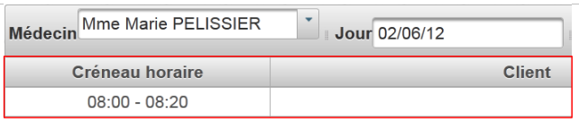 |
- 第 12-14 行：我们将使用上下文菜单来添加/删除预约：
 |
- 第29-32行：当用户想要删除预约时，将显示一个确认框：
 |
- 第 35-37 行：将使用对话框来提示错误：
 |
- 第40-43行：我们需要引入一些JavaScript代码。
6.9.2. 预约表
这里我们将探讨第 5.15 节（第 327 页）中研究过的数据表模型。
让我们来分析页面中的主要元素——显示日程表的表格：
<p:dataTable id="agenda" value="#{form.myDataModel}" var="creneauMedecinJour" style="width: 800px"
selectionMode="single" selection="#{form.creneauChoisi}" emptyMessage="#{msg['form2.emtyMessage']}">
<!-- 时间表列 -->
<p:column style="width: 100px">
...
</p:column>
<!-- 客户列 -->
<p:column style="width: 300px">
...
</p:column>
</p:dataTable>
渲染效果如下：
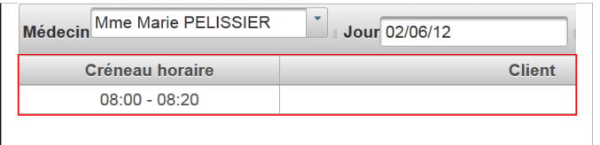 |
这是一个两列表格（第4-6行和第8-10行），数据源为 [Form].getMyDataModel() (value="#{form.myDataModel}")。 每次只能选择一行（selectionMode="single"）。 每次执行 POST 时，所选元素的引用都会被赋值给 [Form].creneauChoisi (selection="#{form.creneauChoisi}")。
需要记住的是，方法 getAgenda 已在模板中初始化了以下字段：
// 模板
private AgendaMedecinJour agendaMedecinJour;
通过调用以下方法 [Form].getMyDataModel（<dataTable> 标签的 value 属性）可获得表格模板：
// dataTable 的模板
public MyDataModel getMyDataModel() {
return new MyDataModel(agendaMedecinJour.getCreneauxMedecinJour());
}
让我们来分析一下作为 <p:dataTable> 标签模板的 [MyDataModel] 类：
package beans;
import javax.faces.model.ArrayDataModel;
import org.primefaces.model.SelectableDataModel;
import rdvmedecins.metier.entites.CreneauMedecinJour;
public class MyDataModel extends ArrayDataModel<CreneauMedecinJour> implements SelectableDataModel<CreneauMedecinJour> {
// 制造商
public MyDataModel() {
}
public MyDataModel(CreneauMedecinJour[] creneauxMedecinJour) {
super(creneauxMedecinJour);
}
@Override
public Object getRowKey(CreneauMedecinJour creneauMedecinJour) {
return creneauMedecinJour.getCreneau().getId();
}
@Override
public CreneauMedecinJour getRowData(String rowKey) {
// 时段列表
CreneauMedecinJour[] creneauxMedecinJour = (CreneauMedecinJour[]) getWrappedData();
// 密钥是一个长整型
long key = Long.parseLong(rowKey);
// 查询所选时段
for (CreneauMedecinJour creneauMedecinJour : creneauxMedecinJour) {
if (creneauMedecinJour.getCreneau().getId().longValue() == key) {
return creneauMedecinJour;
}
}
// 无
return null;
}
}
- 第 7 行：类 [MyDataModel] 是标签 <p:dataTable> 的模板。该类的目的是将已提交的 rowkey 元素与该行关联的元素建立联系，
- 第7行：该类通过类[ArrayDataModel]实现了接口[SelectableDataModel]。 这意味着构造函数的参数是一个数组。正是该数组为 <dataTable> 标签提供数据。在此，数组中的每一行都将与一个 [CreneauMedecinJour] 类型的元素相关联，
- 第13-15行：构造函数将其参数传递给父类，
- 第18-20行：数组的每一行对应一个时间段，并通过时间段的ID（第19行）进行标识。正是这个ID会被发送至服务器，
- 第23行：当某个时间段的ID被提交时，服务器端将执行此代码。 此方法的目的是获取与该ID关联的[CreneauMedecinJour]对象的引用。该引用将被赋值给<dataTable>标签的selection属性的目标：
<p:dataTable id="agenda" value="#{form.myDataModel}" var="creneauMedecinJour" style="width: 800px"
selectionMode="single" selection="#{form.creneauChoisi}" emptyMessage="#{msg['form2.emtyMessage']}">
因此，字段 [Form].creneauChoisi 将包含要添加或删除的对象 [CreneauMedecinJour] 的引用。
6.9.3. 时间段列
 |
时间段列可通过以下代码生成：
<p:dataTable id="agenda" value="#{form.myDataModel}" var="creneauMedecinJour" style="width: 800px"
selectionMode="single" selection="#{form.creneauChoisi}" emptyMessage="#{msg['form2.emtyMessage']}">
<!-- 时间表列 -->
<p:column style="width: 100px">
<f:facet name="header">
<h:outputText value="#{msg['form2.creneauHoraire']}"/>
</f:facet>
<div align="center">
<h:outputFormat value="{0,number,#00}:{1,number,#00} - {2,number,#00}:{3,number,#00}">
<f:param value="#{creneauMedecinJour.creneau.hdebut}" />
<f:param value="#{creneauMedecinJour.creneau.mdebut}" />
<f:param value="#{creneauMedecinJour.creneau.hfin}" />
<f:param value="#{creneauMedecinJour.creneau.mfin}" />
</h:outputFormat>
</div>
</p:column>
<!-- 客户列 -->
<p:column style="width: 300px">
...
</p:column>
</p:dataTable>
- 第 5-7 行：列标题，
- 第8-15行：该列的当前元素。请注意第9行，其中使用了<h:outputFormat>标签，用于格式化要显示的元素。 value 参数指定要显示的字符串。{i,type,format} 这种写法分别表示第 i 个参数、该参数的类型及其格式。此处有 4 个编号为 0 至 3 的参数，它们的类型为数字，并将以两位数的形式显示，
- 第10-13行：<h:outputFormat>标签所需的四个参数。
6.9.4. 客户列
 |
客户列通过以下代码生成：
<!-- 日程表 -->
<p:dataTable id="agenda" value="#{form.myDataModel}" var="creneauMedecinJour" style="width: 800px"
selectionMode="single" selection="#{form.creneauChoisi}" emptyMessage="#{msg['form2.emtyMessage']}">
<!-- 时间表列 -->
...
<!-- 客户列 -->
<p:column style="width: 300px">
<f:facet name="header">
<h:outputText value="#{msg['form2.client']}"/>
</f:facet>
<ui:fragment rendered="#{creneauMedecinJour.rv!=null}">
<h:outputText value="#{creneauMedecinJour.rv.client.titre} #{creneauMedecinJour.rv.client.prenom} #{creneauMedecinJour.rv.client.nom}" />
</ui:fragment>
<ui:fragment rendered="#{creneauMedecinJour.rv==null and form.creneauChoisi!=null and form.creneauChoisi.creneau.id==creneauMedecinJour.creneau.id}">
...
</ui:fragment>
</p:column>
</p:dataTable>
- 第 8-10 行：列标题，
- 第11-13行：当该时间段有预约时显示的当前元素。此时，将显示该预约所对应的客户的头衔、名字和姓氏，
- 第14-16行：另一个代码片段，我们稍后会再讨论。
6.10. 删除预约
删除预约的代码序列如下：
 |
 |
此操作涉及的视图如下：
<!-- 上下文菜单 -->
<p:contextMenu for="agenda">
...
<p:menuitem value="#{msg['form2.supprimer']}" onclick="confirmation.show()"/>
</p:contextMenu>
<!-- 日程表 -->
<p:dataTable id="agenda" value="#{form.myDataModel}" var="creneauMedecinJour" style="width: 800px"
selectionMode="single" selection="#{form.creneauChoisi}" emptyMessage="#{msg['form2.emtyMessage']}">
...
</p:dataTable>
<!-- 删除确认RV -->
<p:confirmDialog id="confirmDialog" message="#{msg['form2.suppression.confirmation']}"
header="#{msg['form2.suppression.message']}" severity="alert" widgetVar="confirmation">
<p:commandButton value="#{msg['form2.supprimer.oui']}" update=":formulaire:contenu" action="#{form.action}"
oncomplete="handleRequest(xhr, status, args); confirmation.hide()">
<f:setPropertyActionListener value="supprimer" target="#{form.action}"/>
</p:commandButton>
<p:commandButton value="#{msg['form2.supprimer.non']}" onclick="confirmation.hide()" type="button" />
</p:confirmDialog>
- 第2-5行：与数据表相关的上下文菜单（for属性）。该菜单包含两个选项 [1]：
 |
- 第 4 行：选项 [Supprimer] 会触发显示第 13-20 行的对话框 [2]，
- 第 15 行：点击 [Oui] 将触发 [Form.action] 的执行，从而删除该约会。 通常情况下，如果所选项目没有约会，右键菜单不应显示 [Supprimer] 选项；如果所选项目有约会，则不应显示 [Réserver] 选项。 我们未能实现如此精细的上下文菜单逻辑。虽然对第一个选中的项目可以实现，但随后发现上下文菜单会保留该首次选择时的配置，导致后续显示不正确。因此我们保留了这两个选项，并决定在用户删除无约会的项目时向其提供提示，
- 第16行：oncomplete属性，用于定义在调用AJAX后执行的JavaScript代码。此处的代码如下：
<!-- 错误消息 -->
<p:dialog header="#{msg['form2.erreur']}" widgetVar="dlgErreur" height="100" >
<h:outputText value="#{form.msgErreur}" />
</p:dialog>
<!-- 服务器响应管理 -->
<script type="text/javascript">
function handleRequest(xhr, status, args) {
// 错误？
if(args.erreur) {
dlgErreur.show();
}
}
</script>
- 第 10 行：JavaScript 代码检查字典 args 是否具有属性 erreur。如果存在，则显示第 2 行中的对话框（属性 widgetVar）。 该对话框显示模板 [Form].msgErreur。
让我们看看用于处理删除约会的执行代码：
<p:confirmDialog ...>
<p:commandButton value="#{msg['form2.supprimer.oui']}" update=":formulaire:contenu" action="#{form.action}"
...>
<f:setPropertyActionListener value="supprimer" target="#{form.action}"/>
</p:commandButton>
...
</p:confirmDialog>
- 第 2 行：将执行方法 [Form].action，
- 第 4 行：在执行该方法之前，字段 action 将被赋值为 'supprimer'。
方法 [action] 如下：
// 对 RV 采取操作
public void action() {
// 根据所需操作
if (action.equals("supprimer")) {
supprimer();
}
...
}
public void supprimer() {
// 需要采取什么措施吗？
Rv rv = creneauChoisi.getRv();
if (rv == null) {
signalerActionIncorrecte();
return;
}
try {
// 删除一个预约
application.getMetier().supprimerRv(rv);
// 更新日程表
agendaMedecinJour = application.getMetier().getAgendaMedecinJour(medecin, jour);
// 显示表单2
setForms(true, true, false);
} catch (Throwable th) {
// 查看错误
prepareVueErreur(th);
}
// 清空所选时段
creneauChoisi = null;
}
- 第 4 行：如果操作为“删除”，则执行方法 [supprimer]，
- 第12行：获取所选时段的预约。需注意，[creneauChoisi]已通过所选元素[CreneauMedecinJour]的引用进行初始化，
- 如果该预约存在，则将其删除（第19行），日历重新生成（第21行）并重新显示（第23行），
- 若删除失败，则显示错误页面（第26行），
- 如果所选元素没有预约（第13行），则说明用户点击了[Supprimer]，但该时段没有预约。报告此错误：
 |
方法 [signalerActionIncorrecte] 如下：
// 报告操作错误
private void signalerActionIncorrecte() {
// 清除所选时段
creneauChoisi = null;
// 错误
msgErreur = Messages.getMessage(null, "form2.erreurAction", null).getSummary();
RequestContext.getCurrentInstance().addCallbackParam("erreur", true);
}
- 第 4 行：取消选中，
- 第 6 行：生成国际化错误消息，
- 第7行：在调用AJAX的args字典中添加属性('错误', true)。
让我们回到按钮 [Oui] 的代码 XHTML：
<p:commandButton value="#{msg['form2.supprimer.oui']}" update=":formulaire:contenu" action="#{form.action}"
oncomplete="handleRequest(xhr, status, args); confirmation.hide()">
- 第 2 行：在执行方法 [Form].action 之后，将执行 JavaScript 方法 handleRequest：
<!-- 错误信息 -->
<p:dialog header="#{msg['form2.erreur']}" widgetVar="dlgErreur" height="100" >
<h:outputText value="#{form.msgErreur}" />
</p:dialog>
<!-- 服务器响应管理 -->
<script type="text/javascript">
function handleRequest(xhr, status, args) {
// 错误？
if(args.erreur) {
dlgErreur.show();
}
}
</script>
- 第 10 行：检查字典 args 是否具有名为 'erreur' 的属性。如果有，则显示第 2 行中的对话框，
- 第 3 行：显示由模板生成的错误消息。
6.11. 预约
预约流程对应以下代码序列：
 |
此操作涉及的视图如下：
<!-- 上下文菜单 -->
<p:contextMenu for="agenda">
<p:menuitem value="#{msg['form2.reserver']}" update=":formulaire:contenu" action="#{form.action}" oncomplete="handleRequest(xhr, status, args)">
<f:setPropertyActionListener value="reserver" target="#{form.action}"/>
</p:menuitem>
...
</p:contextMenu>
<!-- 日程表 -->
<p:dataTable id="agenda" value="#{form.myDataModel}" var="creneauMedecinJour" style="width: 800px"
selectionMode="single" selection="#{form.creneauChoisi}" emptyMessage="#{msg['form2.emtyMessage']}">
<!-- 时间表列 -->
<p:column style="width: 100px">
...
</p:column>
<!-- 客户列 -->
<p:column style="width: 300px">
<f:facet name="header">
<h:outputText value="#{msg['form2.client']}"/>
</f:facet>
...
<ui:fragment rendered="#{creneauMedecinJour.rv==null and form.creneauChoisi!=null and form.creneauChoisi.creneau.id==creneauMedecinJour.creneau.id}">
<p:autoComplete completeMethod="#{form.completeClients}" value="#{form.identiteClient}" size="30"/>
<p:spacer width="50px"/>
<p:commandLink action="#{form.action()}" value="#{msg['form2.valider']}" update=":formulaire:contenu" oncomplete="handleRequest(xhr, status, args)">
<f:setPropertyActionListener value="valider" target="#{form.action}"/>
</p:commandLink>
<p:spacer width="50px"/>
<p:commandLink action="#{form.action()}" value="#{msg['form2.annuler']}" update=":formulaire:contenu">
<f:setPropertyActionListener value="annuler" target="#{form.action}"/>
</p:commandLink>
</ui:fragment>
</p:column>
</p:dataTable>
...
- 第21-31行：显示以下内容：
 |
- 第21行：如果没有预约，且确实进行了选择，并且所选时段的ID与表格中当前元素的ID相匹配，则进行显示。如果不设置此条件，该片段将显示在所有时段中，
- 第22行：该输入框将设置为辅助输入框。此处假设客户数量可能较多，
- 第24-26行：链接[Valider]，
- 第28-30行：链接[Annuler]。
辅助输入字段由以下代码生成：
<p:autoComplete completeMethod="#{form.completeClients}" value="#{form.identiteClient}" size="30"/>
方法 [Form].completeClients 负责根据用户在输入框中输入的字符向用户提供建议：
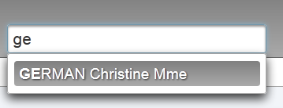 |
建议结果的格式为 [Nom prénom titre]。方法 [Form].completeClients 的代码如下：
// 文本自动完成方法
public List<String> completeClients(String query) {
List<String> identites = new ArrayList<String>();
// 搜索匹配的客户
for (Client c : clients) {
String identite = identite(c);
if (identite.toLowerCase().startsWith(query.toLowerCase())) {
identites.add(identite);
}
}
return identites;
}
private String identite(Client c) {
return c.getNom() + " " + c.getPrenom() + " " + c.getTitre();
}
- 第2行：query是用户输入的字符串，
- 第3行：建议列表。初始为空列表，
- 第5-10行：构建客户的[Nom prénom titre]身份。如果某个身份以query开头（第7行），则将其保留在建议列表中（第8行）。
6.12. 确认预约
确认预约的流程如下：
 | 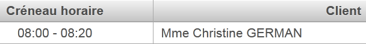 |
链接代码 [Valider] 如下：
<p:commandLink action="#{form.action()}" value="#{msg['form2.valider']}" update=":formulaire:contenu" oncomplete="handleRequest(xhr, status, args)">
<f:setPropertyActionListener value="valider" target="#{form.action}"/>
</p:commandLink>
因此，将由方法 [Form].action() 处理此事件。与此同时，模型 [Form].action 将接收字符串 'valider'。代码如下：
// 应用程序 Bean
@Inject
private Application application;
// 会话缓存
...
private Map<String, Client> hIdentitesClients = new HashMap<String, Client>();
// 模型
private Date jour = new Date();
private Boolean form1Rendered = true;
private Boolean form2Rendered = false;
private Boolean erreurRendered = false;
private AgendaMedecinJour agendaMedecinJour;
private CreneauMedecinJour creneauChoisi;
private List<Erreur> erreurs;
private Boolean erreur = false;
private String identiteClient;
private String action;
private String msgErreur;
@PostConstruct
private void init() {
...
for (Client c : clients) {
hClients.put(c.getId(), c);
hIdentitesClients.put(identite(c), c);
}
}
// 对 RV 的操作
public void action() {
// 根据所需操作
...
if (action.equals("valider")) {
validerResa();
}
}
// 预约确认
public void validerResa() {
// 预订验证
try {
// 客户是否存在？
Boolean erreur = !hIdentitesClients.containsKey(identiteClient);
if (erreur) {
msgErreur = Messages.getMessage(null, "form2.erreurClient", new Object[]{identiteClient}).getSummary();
RequestContext.getCurrentInstance().addCallbackParam("erreur", true);
return;
}
// 添加预约
application.getMetier().ajouterRv(jour, creneauChoisi.getCreneau(), hIdentitesClients.get(identiteClient));
// 更新日程表
agendaMedecinJour = application.getMetier().getAgendaMedecinJour(medecin, jour);
// 显示 form2
setForms(true, true, false);
} catch (Throwable th) {
// 错误视图
prepareVueErreur(th);
}
// 清除所选时段
creneauChoisi = null;
// 清空客户信息
identiteClient = null;
}
- 第33-35行：由于字段action的值，将执行方法[validerResa]，
- 第 43 行：首先验证客户是否存在。实际上，在辅助输入区域中，用户可能未参考系统提供的建议，而是直接手动输入了数据。辅助输入功能关联于模型 [Form].identiteClient。 因此，需检查该身份是否存在于模型实例化时构建的字典 identitesClients 中（第 20 行）。该字典将类型为 [Nom prénom titre] 的客户身份与客户本身相关联（第 25 行），
- 第44行：如果客户不存在，则向浏览器返回错误，
- 第 45 行：显示一条国际化错误消息，
- 第 46 行：向 AJAX 调用的 args 字典中添加属性 ('error', true)。AJAX 的调用定义如下：
<p:commandLink action="#{form.action()}" value="#{msg['form2.valider']}" update=":formulaire:contenu" oncomplete="handleRequest(xhr, status, args)">
<f:setPropertyActionListener value="valider" target="#{form.action}"/>
</p:commandLink>
在上文第 3 行中，可以看到链接 [Valider] 具有 oncomplete 属性。正是该属性将根据之前已介绍的技术显示错误信息。
- 第 50 行：要求 [métier] 层为所选日期（jour） 所选时间段（creneauChoisi.getCreneau()）以及所选客户（hIdentitesClients.get(identiteClient)），
- 第52行：请求[métier]层刷新医生的日程表。此时将显示已添加的预约以及应用程序其他用户可能做出的所有修改，
- 第54行：重新显示日程表[form2.xhtml]，
- 第57行：若发生错误，则显示错误页面。
6.13. 取消预约
这对应以下流程：
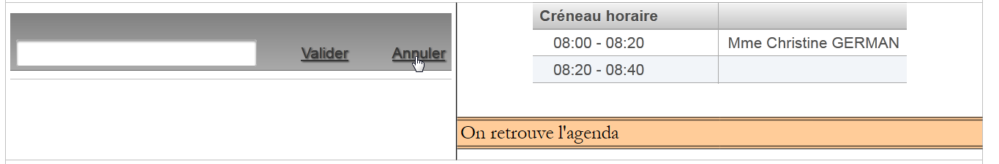 |
页面 [form2.xhtml] 中的按钮 [Annuler] 如下所示：
<p:commandLink action="#{form.action()}" value="#{msg['form2.annuler']}" update=":formulaire:contenu">
<f:setPropertyActionListener value="annuler" target="#{form.action}"/>
</p:commandLink>
因此调用了方法 [Form].action：
// 对 RV 执行操作
public void action() {
// 根据所需操作
...
if (action.equals("annuler")) {
annulerRv();
}
}
// 取消预约
public void annulerRv() {
// 显示表单2
setForms(true, true, false);
// 清除所选时段
creneauChoisi = null;
// 清空客户信息
identiteClient = null;
}
6.14. 日历导航
可通过工具栏在日历中导航：
 |  |
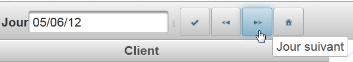 |  |
 |  |
虽然未在上述截图中显示，但日程表已更新为所选新日期的预约。
在 [form1.xhtml] 中，这三个按钮的标签如下：
<p:toolbar>
<p:toolbarGroup align="left">
...
<h:outputText value="#{msg['form1.jour']}"/>
<p:calendar id="calendrier" value="#{form.jour}" readOnlyInputText="true">
<p:ajax event="dateSelect" listener="#{form.hideAgenda}" update=":formulaire:contenu"/>
</p:calendar>
<p:separator/>
<p:commandButton id="resa-agenda" icon="ui-icon-check" actionListener="#{form.getAgenda}" update=":formulaire:contenu"/>
<p:tooltip for="resa-agenda" value="#{msg['form1.agenda']}"/>
<p:commandButton id="resa-precedent" icon="ui-icon-seek-prev" actionListener="#{form.getPreviousAgenda}" update=":formulaire:contenu"/>
<p:tooltip for="resa-precedent" value="#{msg['form1.precedent']}"/>
<p:commandButton id="resa-suivant" icon="ui-icon-seek-next" actionListener="#{form.getNextAgenda}" update=":formulaire:contenu"/>
<p:tooltip for="resa-suivant" value="#{msg['form1.suivant']}"/>
<p:commandButton id="resa-today" icon="ui-icon-home" actionListener="#{form.today}" update=":formulaire:contenu"/>
<p:tooltip for="resa-today" value="#{msg['form1.today']}"/>
</p:toolbarGroup>
<p:toolbarGroup align="right">
...
</p:toolbarGroup>
</p:toolbar>
[Form].getPreviousAgenda、[Form].getNextAgenda、[Form].today 的方法如下：
private Date jour = new Date();
public void getPreviousAgenda() {
// 切换到前一天
Calendar cal = Calendar.getInstance();
cal.setTime(jour);
cal.add(Calendar.DAY_OF_YEAR, -1);
jour = cal.getTime();
// 日程表
if (form2Rendered) {
getAgenda();
}
}
public void getNextAgenda() {
// 切换到第二天
Calendar cal = Calendar.getInstance();
cal.setTime(jour);
cal.add(Calendar.DAY_OF_YEAR, 1);
jour = cal.getTime();
// 日程表
if (form2Rendered) {
getAgenda();
}
}
// 今日日程
public void today() {
jour = new Date();
// 日程
if (form2Rendered) {
getAgenda();
}
}
- 第1行：日历的显示日期，
- 第5行：使用日历，
- 第6行：将其初始化为日历的当前日期，
- 第7行：从日历中减去一天，
- 第8行：并将其重新初始化为日历的显示日期，
- 第11行：如果日历正在显示，则重新显示日历。因为用户可以在日历未显示的情况下使用工具栏。
其他方法与此类似。
6.15. 切换显示语言
语言切换由工具栏中的菜单按钮管理：
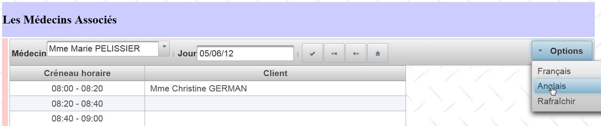 |
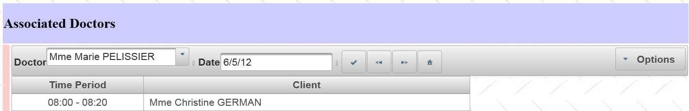 |
菜单按钮的标签如下：
<p:toolbar>
<p:toolbarGroup align="left">
...
</p:toolbarGroup>
<p:toolbarGroup align="right">
<p:menuButton value="#{msg['form1.options']}">
<p:menuitem id="menuitem-francais" value="#{msg['form1.francais']}" actionListener="#{form.setFrenchLocale}" update=":formulaire"/>
<p:menuitem id="menuitem-anglais" value="#{msg['form1.anglais']}" actionListener="#{form.setEnglishLocale}" update=":formulaire"/>
<p:menuitem id="menuitem-rafraichir" value="#{msg['form1.rafraichir']}" actionListener="#{form.refresh}" update=":formulaire:contenu"/>
</p:menuButton>
</p:toolbarGroup>
</p:toolbar>
在模板中执行的方法如下：
private String locale = "fr";
public void setFrenchLocale() {
locale = "fr";
// 刷新页面
redirect();
}
public void setEnglishLocale() {
locale = "en";
// 重新加载页面
redirect();
}
private void redirect() {
// 将客户端重定向至 Servlet
ExternalContext ctx = FacesContext.getCurrentInstance().getExternalContext();
try {
ctx.redirect(ctx.getRequestContextPath());
} catch (IOException ex) {
Logger.getLogger(Form.class.getName()).log(Level.SEVERE, null, ex);
}
}
第 3 行和第 9 行中的方法仅初始化第 1 行中的字段 locale，然后将客户端浏览器重定向到同一页面。重定向是一种响应，其中服务器要求浏览器加载另一个页面。随后，浏览器会向该新页面发送 GET 请求。
- 第17行：[ExternalContext]是JSF的子类，用于访问当前正在运行的Servlet，
- 第 19 行：执行重定向操作。 方法 redirect 的参数是客户端浏览器应重定向到的页面的 URL。此处我们希望重定向到 [/mv-rdvmedecins-pf]，即我们应用程序的名称：
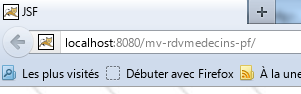 |
方法 [getRequestContextPath] 用于获取该名称。因此，将加载我们应用程序的首页 [index.xhtml]。该页面关联了作用域为会话的模型 [Form]。 该模板管理三个布尔值，用于控制页面 [index.xhtml] 的外观：
private Boolean form1Rendered = true;
private Boolean form2Rendered = false;
private Boolean erreurRendered = false;
由于该模板属于会话作用域，这三个布尔值保留了其原始值。因此，页面 [index.xhtml] 将以重定向前的状态显示。该页面通过以下 [layout.xhtml] Facelet 模板进行格式化：
<?xml version='1.0' encoding='UTF-8' ?>
<!DOCTYPE html PUBLIC "-//W3C//DTD XHTML 1.0 Transitional//EN" "http://www.w3.org/TR/xhtml1/DTD/xhtml1-transitional.dtd">
<html xmlns="http://www.w3.org/1999/xhtml"
xmlns:h="http://java.sun.com/jsf/html"
xmlns:p="http://primefaces.org/ui"
xmlns:f="http://java.sun.com/jsf/core"
xmlns:ui="http://java.sun.com/jsf/facelets">
<f:view locale="#{form.locale}">
....
</f:view>
</html>
第 9 行的标签通过其 local 属性设置了页面的显示语言。因此，该页面将根据具体情况切换为法语或英语。那么，为什么要进行重定向呢？让我们回到语言切换选项的标签：
<p:toolbar>
<p:toolbarGroup align="left">
...
</p:toolbarGroup>
<p:toolbarGroup align="right">
<p:menuButton value="#{msg['form1.options']}">
<p:menuitem id="menuitem-francais" value="#{msg['form1.francais']}" actionListener="#{form.setFrenchLocale}" update=":formulaire"/>
<p:menuitem id="menuitem-anglais" value="#{msg['form1.anglais']}" actionListener="#{form.setEnglishLocale}" update=":formulaire"/>
<p:menuitem id="menuitem-rafraichir" value="#{msg['form1.rafraichir']}" actionListener="#{form.refresh}" update=":formulaire:contenu"/>
</p:menuButton>
</p:toolbarGroup>
</p:toolbar>
这些标签最初是设计为通过调用 AJAX 来更新表单 ID 字段（第 7 行和第 8 行的 update 属性）。但在测试中，语言切换并非每次都能成功。因此采用了重定向来解决这个问题。 或许也可以在标签中添加 ajax='false' 属性来触发页面刷新。这样就能避免重定向。
6.16. 列表刷新
这对应于以下操作：
 |
与选项 [Rafraîchir] 关联的标签如下：
<p:menuitem id="menuitem-rafraichir" value="#{msg['form1.rafraichir']}" actionListener="#{form.refresh}" update=":formulaire:contenu"/>
方法 [Form].refresh 如下：
public void refresh() {
// 刷新列表
init();
}
方法 init 是构建 Bean [Form] 之后立即执行的方法。其目的是将数据库中的数据缓存到模型中：
// Application Bean
@Inject
private Application application;
// 会话缓存
private List<Medecin> medecins;
private List<Client> clients;
private Map<Long, Medecin> hMedecins = new HashMap<Long, Medecin>();
private Map<Long, Client> hClients = new HashMap<Long, Client>();
private Map<String, Client> hIdentitesClients = new HashMap<String, Client>();
...
@PostConstruct
private void init() {
// 将医生和客户数据缓存
try {
medecins = application.getMetier().getAllMedecins();
clients = application.getMetier().getAllClients();
} catch (Throwable th) {
...
}
...
// 字典
for (Medecin m : medecins) {
hMedecins.put(m.getId(), m);
}
for (Client c : clients) {
hClients.put(c.getId(), c);
hIdentitesClients.put(identite(c), c);
}
}
方法 init 用于构建第 5-9 行中的列表和字典。这种技术的不利之处在于，这些元素不再反映数据库中的变更（例如新增客户、医生等）。 方法 refresh 强制重建这些列表和字典。因此，每当数据库发生变更（例如添加新客户）时，我们都会调用该方法。
6.17. 结论
回顾一下我们刚刚构建的应用程序架构：
 |
我们主要基于已构建的 JSF2 版本：
- 保留了 [métier]、[DAO]、[JPA] 层，
- Web层中的[Application]和[Form] Bean虽被保留，但因用户界面的增强，为其新增了功能，
- 用户界面已进行深度改造。其功能更为丰富，且更易于使用。
从 JSF 切换到 Primefaces 来构建 Web 界面需要一定的经验，因为起初面对海量的可用组件会让人有些不知所措，最终也不太清楚该使用哪些。因此，必须仔细考虑界面所需的可用性。
6.18. Eclipse 测试
与之前示例应用程序的版本一样，我们将演示如何使用 Eclipse 测试此 03 版。首先，我们将示例 03 [1] 的 Maven 项目导入 Eclipse：
 |
- [mv-rdvmedecins-ejb-dao-jpa]：图层 [DAO] 和 [JPA]，
- [mv-rdvmedecins-ejb-metier]：[métier]层，
- [mv-rdvmedecins-pf]：使用 JSF 和 Primefaces 实现的 [web] 层，
- [mv-rdvmedecins-app]：企业项目 [mv-rdvmedecins-app-ear] 的父项目。导入父项目时，子项目会自动导入，
- 在 [2] 中，执行企业项目 [mv-rdvmedecins-app-ear]，
 |
- 在 [3] 中，选择 Glassfish 服务器，
- 在 [4] 中，在 [Servers] 选项卡中，应用程序已部署。它不会自动运行。 需在浏览器中访问 URL [http://localhost:8080/mv-rdvmedecins-pf/]：
 |